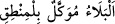

hepsinin ölüp helâk olmasından kinâyedir. Her taraftan kuşatılmak, esâsen düşmanın
yapacağı iştir. Çünkü düşman tarafından kuşatılanlar mağlup olup murâdlarını yerine
getirmekten âciz kalırlar ya da tamamen helâk olurlar.
Yûsuf kıssası, “__WORD__ Belâ ağızdan çıkan söze bağlıdır.” şeklindeki yaygın
sözü doğru çıkarmaktadır. Çünkü Yâkub (a.s.) ilk olarak Yûsuf hakkında: “Onu kurt
yemesinden korkarım.” (Yûsuf, 12/13) demiş ve bu sözü ile ilgili bir belâya dûçâr
olmuştur. Nitekim çocukları “Onu kurt yedi” (Yûsuf, 12/17) demişlerdir. Burada da
“Hepiniz kuşatılıp engellenmedikçe, mutlaka onu bana getireceğinize dâir….”
şeklinde bir söz sarf etmiş, yine ileride görüleceği üzere bununla imtihân edilerek
çocukları kuşatılmış ve zorla tutulmuşlardır.
Kâşifî der ki: “Tibyân’da şöyle denilir: Yâkub (a.s.) şöyle dedi: “Nebîlerin hâtemi ve
rasullerin efendisi Muhammed (s.a.) hakkı için yemin etmedikçe onu size vermem.
Onlar kabul gösterdiler. Bünyamin hakkında vefâsızlık etmeyeceklerine dâir
Peygamberimiz’in mertebesine yemin ettiler.”
“Ne zaman ki sözlerini verdiler,” babaları Yâkub’un istediği şekilde Allah adına söz
verdiler Yâkub (a.s.): “Söylediğimize Allah vekildir.” dedi.” Yani taraflardan birinin
sağlam bir söz istemesi, diğerinin de bu sözü vermesi şeklindeki konuşmalarımıza Allah
vekildir. Bu konuşmalardan haberdârdır ve bizleri kontrol etmektedir.
Bu sözleriyle Yâkub (a.s.) Allah’a olan güvenini göstermek ve oğullarını verdikleri
sözü yerine getirmeye teşvik etmek istemektedir.
Âyette tevekkülün; işi iyice sağlama aldıktan sonra yapılması gerektiğine işaret
vardır. Nitekim Allah Teâlâ şöyle buyurur: “Kararını verdiğin zaman da artık Allah’a
dayanıp güven!” (Al-i İmran, 3/159)
el-Kevâşî’de der ki: Yâkub (a.s.)’ın: “onu asla sizinle göndermem” sözünde zâhirî
sebeplere bağlanmanın câiz olduğuna ve bu durumda tevekkülün geçerli olduğuna delil
vardır.
Mesnevî’de şöyle denilir:
Tevekkül ediyorsan işte, çalışmada et
Kazan da sonra Cebbâr’a dayanıp güven
Bu bakımdan insanoğlunun hem bu âlemdeki mûteber sebepleri göz önünde
bulundurmalı hem de bu sebeplere sadece kulluk maksadıyla riâyet edip güvenmelidir.
Daha da ötesi kalbini Allah’a ve O’nun takdirine bağlayıp O’nun dışındaki varlıklardan
ümidi keserek sadece O’na ve O’nun takdîrine güvenmelidir. Sebebi terk etmemek
mesele değildir. Esas mesele Allah seni tecrîd makamına erdirmişken sebebi ve
sebepleri irâde etmeyi terk etmendir. Bu ise yüce himmetten bir düşüştür. Çünkü tecrîd,
Allah’tan vâsıtasız alan kişilerin hâlidir. Bu halde kendini tecrîd eden kimse, bir
hükümdarın kendisine rızâ kaftanı giydirmesine rağmen çobanlık etme isteğiyle yanıp
tutuşan kimseye benzer.